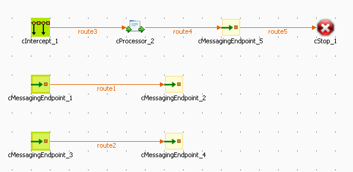
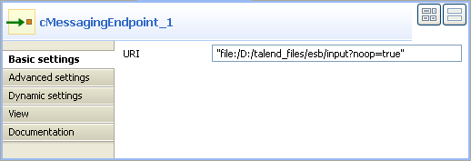
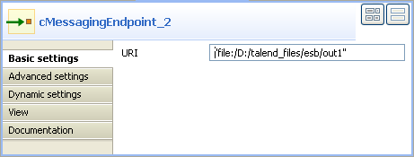
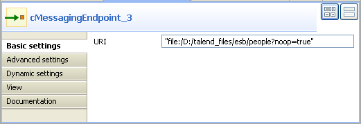
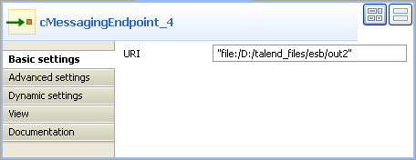
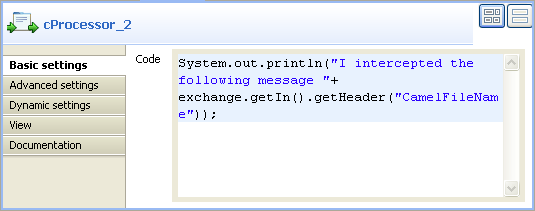
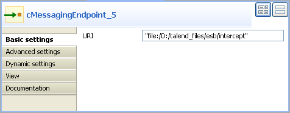
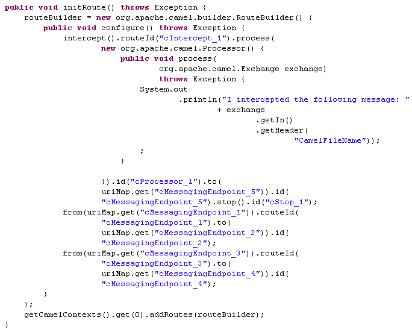

Component Family | Exception | |
Function | cIntercept intercepts the messages of all the routes before they are produced, and routes them in a new single route without modifying the original routes. When this detour is complete, messages are sent to the originally intended target endpoints. | |
Purpose | cIntercept intercepts a route and redirects it in another route without modifying it. This can be useful at testing time to simulate error handling. | |
Usage | cIntercept is a start component of a sub-route. | |
Connections | Route | Select the Route link to intercept all the messages of all the routes listened by the cIntercept. |
| When | Select the When link to filter the messages to intercept and click the Component view. In the Type list, select the type of language you will use to declare your condition. In the Condition field, type in the condition that will be used to filter the messages. All the messages that do not match this condition are dropped by default or can be retrieved with the Otherwise link to a different channel. |
Limitation | As you are doing an integration test and you want to keep the original route untouched, you can not add interceptors or mocks directly in the route. | |
In this scenario, the message routings are intercepted and routed in a new route.
|  |
Create two routes to intercept first. To do so:
From the Palette, expand the Messaging folder and drop four cMessagingEndpoint components onto the design workspace.
Right-click the component labeled cMessagingEndpoint_1, select Row > Route in the contextual menu and click the component labeled cMessagingEndpoint_2.
Repeat this operation to connect the component labeled cMessagingEndpoint_3 and the component labeled cMessagingEndpoint_4.
Double-click the component labeled cMessagingEndpoint_1 to display its Component view, and type in the URI of the messages you want to route in the URI field.
Here, we are handling file messages, so, type in “file:/” followed by the path to the folder containing the files to send, with the noop file specific option. This option tells Camel not to perform any operation on the files, as a result that files will stay as they are and will not be removed from their directory.
Double-click the component labeled cMessagingEndpoint_2 to display its Component view, and type in the URI of the messages you want to route your message in the URI field.
Here, we are handling file messages, so, type in "file:/" followed by the path to the folder to which the files will be routed, out1 in this use case.
In the same way, set the components across the second route as shown below.

Now you can start to create the intercepting route connection. To do so:
From the Palette, expand the Exception folder, select the cIntercept component and drop it onto the design workspace.
Repeat this operation with a cProcessor component from the Processor folder, a cMessagingendpoint component from the Messaging folder, and a cStop component from the Miscellaneous folder.
Right-click the first cIntercept component, select Row > Route in the contextual menu and click the cProcessor component.
Repeat this operation to connect the cProcessor, cMessagingendpoint, and cStop components.
Leave the cIntercept component as it is because it intercepts all the messages of all the routes as soon as the messages are sent and does not have properties to set.
Double-click the cProcessor component to display its Component view and customize the code as you want.
By default, a piece of code is already set in the Code field of the Component view. This code is a Java code that makes a message: "We just downloaded:", which is displayed on the console, followed by the name of the intercepted message.
Double-click the cMessagingEndpoint_5 component to display its Component view, and type in the URI of the folder where you want your messages to be routed in the URI field.
Here, we are handling file messages, so, type in "file:/" followed by the path to the folder in which the files will be routed. In this use case, the files will be received in a folder named intercept.
Leave the cStop component as it is because it stops the route on which it is dropped and does not have properties to set.
Press Ctrl+S to save your Route.
Click the Code tab at the bottom of the design workspace to have a look at the generated code.
 Click the Run view to display it and click the Run button to launch the execution of your route.
You can also press F6 to execute it.
RESULT: Files are sent from endpoints, caught by the cIntercept component, monitored by the cProcessor component and sent to a new endpoint, and then the original routes are stopped before they can end.